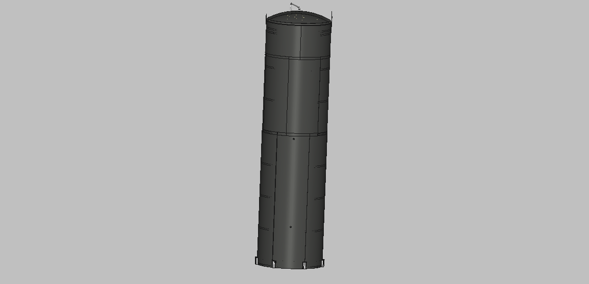
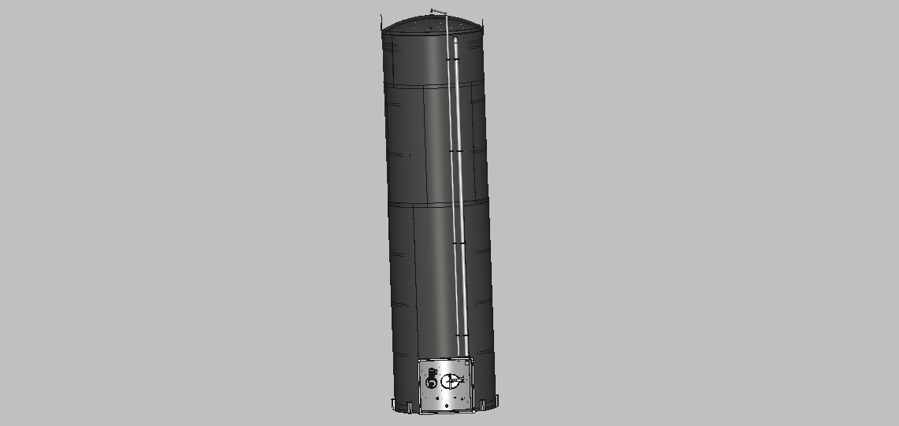
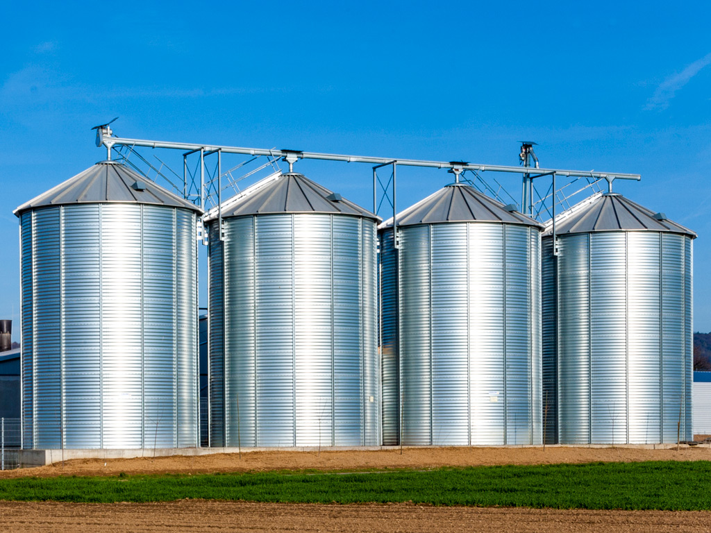

Modelagem 3D



Silos de grãos são estruturas de armazenamento projetadas para preservar e proteger grandes quantidades de grãos, como trigo, milho, arroz, entre outros. Geralmente, são feitos de metal, concreto ou aço e vêm em diferentes tamanhos e formatos, desde unidades pequenas até grandes instalações industriais. Eles ajudam a manter os grãos secos, protegidos de pragas, como insetos e roedores, e preservam sua qualidade até que sejam utilizados ou comercializados.

Volume
Altura
Raio
Custo
Para mais informações, entre em contato conosco
Email: contato@silosagrarios.com.br